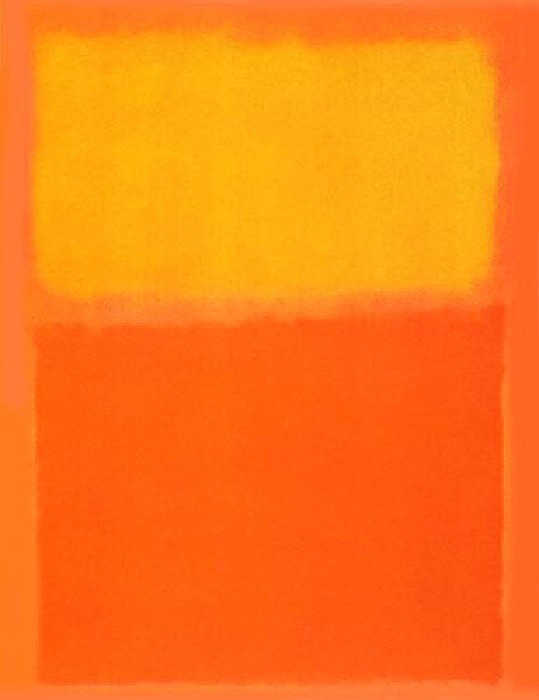

同一頁投影片（第 3 單元 · 羅斯科〈Orange and Yellow〉），四種處理。 內容、文字、圖片完全相同，只有視覺語言不同。 這是樣張，現有簡報一行都沒有動。
#53ae6e 是橘與紅的補色，
而這門課有一半的作品是橘與紅的——學生看到的顏色關係，不是作品本身的顏色關係。
解法不是換掉整個底色，而是在圖片與背景之間加一塊襯紙（簡報裡按 B，預設關閉）：
它修好了有圖的那 ~180 頁，沒圖的 ~390 頁一個像素都不用動，
而且綠色是 Vicky 自己的顏色，留著。
下一步（把寫死的色票收成 token、做成可切換主題）當時沒有做。

綠色是橘色的補色，所以綠底會把這張畫的橘推到最亮、最跳——學生看到的對比， 比羅斯科畫的更強。暖灰最接近美術館牆面。純白則反過來，會讓畫面稍微顯暗， 而且投影時白底本身會刺眼。暗底則讓畫自己發光，這是傳統藝術史幻燈片 演講廳的條件——但它要一間暗的教室才成立。
溫暖、好親近、是她自己的顏色。代價是：每一件作品都掛在一面彩度很高的牆上。
暖灰牆、作品不加圓角、說明文字改成展場牆標的格式（藝術家／作品名／年代媒材）。 綠色沒有消失，降級成重點色：進度條、HUD 的那個點、詞彙 chip 的底線。 安靜，但安靜比大聲難做。
這不是第四種風格，是 A 的夜間版——同一套版面、同一個牆標，只是把牆關掉。 畫變大了，文字退後，因為在暗的教室裡只有一個東西是亮的。 這也正是藝術史這門學科原本的樣子：一間拉上窗簾的演講廳，一台幻燈機。 第 9 單元講投影與錄像時，這個形式本身就是內容。 代價很實際：複習頁要印成 PDF 時一定得用亮色版，學生在白天的手機上看也會吃力。
白底、grotesk、看得見的網格、一個紅色。編號固定在同一個位置，每一頁都不動。 這是這門課那個年代的印刷語言——Müller-Brockmann、Judd 的圖錄、Weiner 的字體。 美術系學生會讀出這個玩笑。風險也在這裡：它有個性，所以它會跟作品搶話。